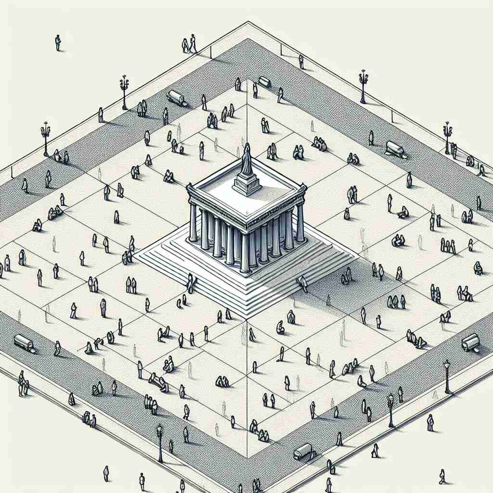
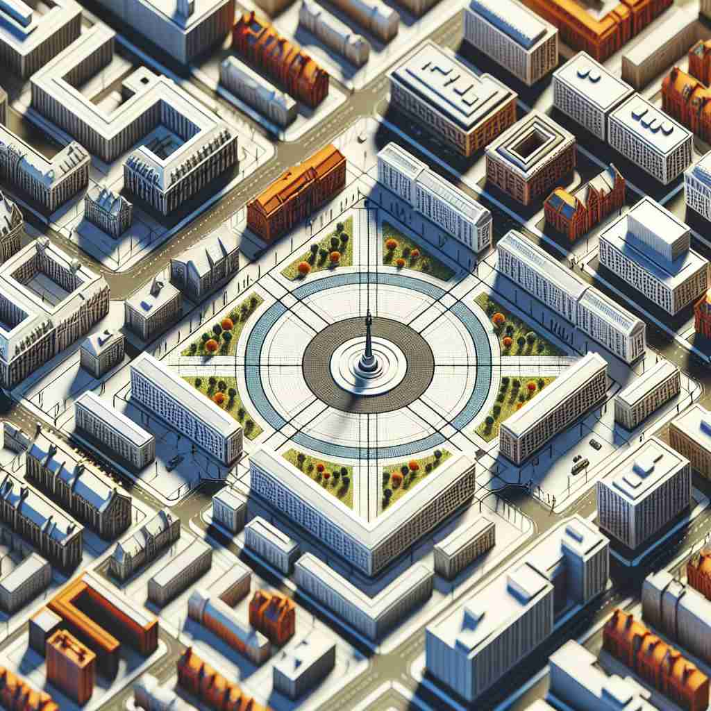

💬 The player wants to hit the center of the dartboard.

💬 The fountain is located in the town center, where many people gather.

💬 The statue is in the center of the plaza.

💬 The park is located at the center of the city.
🔈 [ˈsentə(r)]
🗝️ n. the middle point or part of something
🖼️ 想象一个巨大的圆形游乐园，中央有一个彩色的喷泉。所有的游乐设施都围绕着这个中心点展开，游客们在中心喷泉附近聚集，感受这片区域的活力和核心地位。
🔍 想象一个圆的中心点，这就是'center'的核心含义。从这个中心点，我们可以延伸出物理位置、活动场所、控制中枢、政治立场等含义。无论是名词还是动词用法，都与这个'中心'概念紧密相连。记住这个核心图像，可以帮助你更好地理解和运用'center'的各种含义。
💬 The player wants to hit the center of the dartboard.
💬 The fountain is located in the town center, where many people gather.
💬 The statue is in the center of the plaza.
💬 The park is located at the center of the city.
🌳 词根 'centr-' 来自拉丁语 'centrum'，意思是 '中心'。这个词本身就是一个名词，表示 '中心，中央'。
💡 记住 'center' 可以联想为 '中央' 的位置。想象所有事物围绕一个固定点旋转，那个点就是 'center'，帮助记忆时可以想到 '中心位置'。
🗝️ n. a place or building used for a particular activity
🖼️ 在一个现代化的社区中，有一个新建活动中心。居民们可以在这里参加各种活动，包括健身课、艺术工作坊和社交聚会，这个中心成为了社区的活跃交流场所。
💬 We're going to the shopping center this weekend.
❓ 类比为活动的"中心点"
🗝️ n. the point from which an activity or process is directed
🖼️ 在一间大型公司的总部，一间配备了高科技设备的控制室正全力运作。这里是组织所有事务的指挥中心，工作人员通过监控屏幕协调各业务部门的运行。
💬 The brain is the center of the nervous system.
❓ 比喻为控制或影响的"中心"
🗝️ n. a political party or group holding moderate views
🖼️ 在一个热烈的政治辩论中，代表中间派的政党成员正在发言。他们倡导的政策立场折衷平衡，试图在两极化的环境中寻找一种中庸的解决方案。
💬 The new party aims to appeal to the center of politics.
❓ 政治光谱中的"中间位置"
🗝️ v. to place or be in the middle of something
🖼️ 在一个复杂的几何图中，设计师将一个明亮的点放在整个图案的正中，使整个设计的焦点集中在那里。
💬 The statue was centered in the town square.
❓ 使某物处于"中心位置"
🗝️ v. to focus on
🖼️ 在一个创意工作坊上，参与者被要求中心于他们的项目，通过不断调整和修改来实现他们的设计目标。
💬 The discussion centered on environmental issues.
❓ 将注意力集中到"中心"